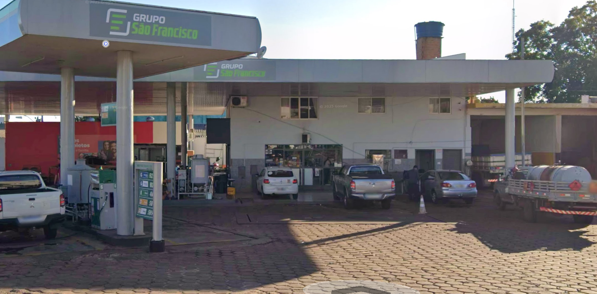

Sobre a comunidade do Centro
Sempre muito bem receptiva
Posto grupo são francisco
um dos postos de combustiveis mais famosos da cidade com funcionarios cimpaticos, com certeza um ponto famoso da cidade

Padaria e conveniência Bem Caseiro
"esta com fome e perto do centro? eu tenho a solução para você, com funcionarios amigaveis que estão alí para te servir com cucas, pães, bolos e tudo que você precisar

Igreja Matriz
A comunidade mais unida do centro sempre com festas e missas aos domingos
O que achou do centro?
Caso tenha alguma duvida, entre em contato com a prefeitura de Capanema
Fale com eles